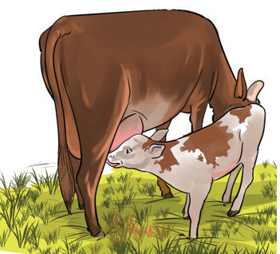

nyani na kondoo. Kielelezo namba 15 kinaonesha mfano wa mamalia.

Kielelezo namba 15 kinaonesha ndama akinyonya maziwa kutoka kwa ng’ombe.Kielelezo namba 15: Ndama akinyonya maziwa
Sifa za mamalia
Mamalia wote wana viwele. Kwa mamalia wa kike viwele hivyo huzalisha maziwa kwa ajili ya kuwanyonyesha watoto wao.
Miili ya mamalia imefunikwa na vinyweleo vinavyowasaidia kutunza joto la mwili.
Ngozi ya mamalia ina tezi za jasho.
Mamalia huzaa watoto walio hai na waliokamilika mfano, binadamu na ng’ombe.
Mamalia walio wengi huishi nchi kavu na baadhi yao huishi kwenye maji. Mifano ya mamalia waishio kwenye maji ni nyangumi na pomboo.
Mamalia wana damu moto.
Mamalia wanatumia mapafu kupumua.
Mamalia wana masikio ya nje.